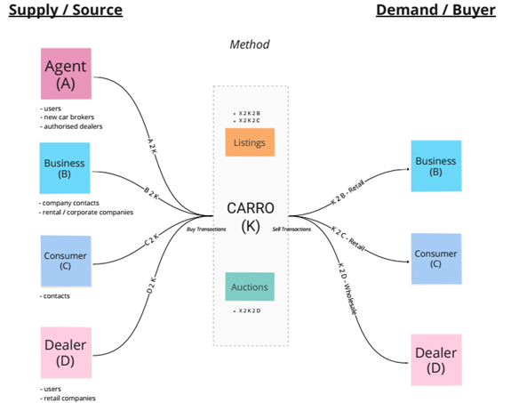

IT Vendor Management Group project.
Founded in 2015, Carro is an online used car marketplace, that offers full-stack service for all aspects of car ownership including financing, after-sales services, and on-demand roadside recovery platform .It is top on the list for Singapore’s Fastest Growing Companies in 2021 and operates within ASEAN. Carro challenges the traditional way of buying and selling cars and this is made possible with its focus on providing consumers with technology-driven services, leveraging on innovation and technology for a seamless experience throughout their journey of car ownership.
“Delivering delightful experiences as simply as ‘Click, Click, Done’.”
“Making it easy, quick, and safe for anyone to own the vehicle of their choice.”

Carro Singapore entered a joint venture (“JV”) with MyTukar, a popular car bidding platform operating in Malaysia, in September 2019. In March 2020, the Covid-19 pandemic forced governments to impose travel bans and country-wide lockdowns. This accelerated the companies to enhance the digital experience of car dealership. To do this, the JV began amalgamating the technological capabilities from Carro with MyTukar’s business coverage across Malaysia. The goal was to catalyse the growth of the used car market. However, with both teams running on different systems in silo, the overall system maintenance would be tedious and inefficient. Furthermore, given both sides had their own style of coding and development, it would have resulted in the systems becoming more isolated over time. These were the drivers for Project X, the merging of 2 entities’ websites and services, into one common unified online platform.
The aim of Project X is to come up with one common platform to provide all business products and internal services that would benefit consumers and employees respectively in Singapore and Malaysia. ## 3.2 Planning Process As MyTukar already had its existing code base and business logic, Carro SG had to update its current backend (BE) and frontend (FE) systems and modules. This project deals with changes not only in the infrastructure, but alignment of business flow and rules, thus the need to scope out business requirements from both sides. Roadmap planning was laid out as such:
| Phases | Activities identified |
|---|---|
| Phase 0: Preparation work | - Understanding of MyTukar systems and process flow - Building new server in Singapore - Identify paths and modules that needs to be built |
| Phase 1: Build new BE to support MyTukar FE | - Build includes both external facing (consumer side) and admin portal (internal side). While new internal web portal are prepared, MY would continue to use its existing portal - Portal must be ready for MY internal process and operations. Cut-off MY existing portal to connect to new portal happens - Migration of MY database to new web portal |
| Phase 2: Build external facing FE (consumers) | - At the end of this will be full usage of new portal for both internal and external users (consumers) |
Product managers from both sides are to direct and manage their individual project areas, using their product knowledge as well as project management skills. Quality check and quality assurance for each phase of deployment for every product is carried out by the project leader and product managers. A communication plan was drawn up as it is necessarily to exchange business information and source code between both sides, with the daily scrum meetings in place. To keep check of stakeholder requirements and engage them in the product deployments, “Game Days” were put in place before the go-live stage, to allow the stakeholders get hands-on with the new demo system and gather feedbacks for improvements.
The daily scrum meetings and huddles allow the individual teams to surface any obstacles. The product manager and project leader are always present and listening in to help overcome any difficulties. Numerous “Game Days” are put in place at different phases of pre-deployment stage allows for teams to envision the work requirements at different stages as well as targets and milestones to be reached.
Before the cut-off day and switching over of MyTukar’s old system to the new system based in Singapore HQ, the project manager must verify and make sure all modules and pathways are tested working and bugs fixed. The final product is then completed with the shutting down of the old system. A post-implementation project review was carried out to reflect on areas of improvement and lessons learned.
The project manager, being a software engineering lead, mainly focused on the technical side of scope, which is to build an integrated application support feature synchronisation of Singapore and Malaysia business.
At the initial stage, to determine the project scope and requirements, the project manager, project team representatives and stakeholders reviewed and accessed the common and different existing technical applications on both sides, such as operation system, transaction, inventory, and listing modules. The project team held meetings and asked for access rights to understand the source codes and sought to understand how both sides implemented it for the business.
In such requirement gathering, the team understood the dependencies of the applications, the function values, and the feature complexity. Then, all planning features were sorted accordingly, all terms and working flows were synchronized on agreement. As such, the project team subdivided the major scope to smaller and manageable tasks, modules according to dependency, complexity and priority and assigned technical owners to work on the solutions concurrently.
For any changes required or any missing features in discrepancy of planning scope, the project manager highlighted the process of review and understood the feature first, then carefully considered and evaluated whether the new scope could be delayed, solved later, or delivered immediately. In particular, considering the fast-growing industry environment and the importance to be the market pioneer, the project manager always prioritized the project launch in time and understand the most critical things need to be included in the application, therefore sometimes need to compromise with minimum product to deliver the overall system and application. “Done is something better than perfect”, as said by project manager.
Schedule plans were developed in the project planning stage by the project team and stakeholders. Activity duration were measured by feature complexity. The hard deadlines were developed according to key feature completion milestones.
To control schedule closely, the project team had to review hard deadlines and feature requirements every week and making sure to avoid delays. However, the project manager also mentioned that it is inevitable for delays on some occasions and had to evaluate if anything needs to be pushed back. These adjustments were done immediately. He had to understand the reasons of delay and come up with an actionable follow up plan. Besides, the project manager had to update the project status with stakeholders regularly on the schedule management and changes requirement.
The purpose of this integration is to save operating cost for the company in the long run. The main cost of the project is human resources (software engineers) and development environment (Amazon Web Service).
The team agreed on the value of the module based on qualitative approach. For example, the module will be evaluated based on the importance of dependency, and difficulty to build it. With business experience and understanding, the team would then decide the important aspects of the features and prioritize the features with higher value accordingly.
The cost saving strategy of this project was to firstly assign a few experienced core team members to work on the main structure of the project, such that the company can save excessive human resources for other project or system maintenance. As the project moved on and increased in scope, the project manager will assign incremental staff to work on the feature development concurrently and accelerate the completion.
Whenever there was a new scope and additional human resources needed, the project manager emphasized the evaluation of the features, the importance level and delivery time. Then, he will decide on the number of employees to assign in consideration of technical level of junior/experienced and whether to work individually or in a team, such that he can use minimum input with maximum value output.
The purpose of quality management in a project is to ensure that the project satisfies the needs for which the project was undertaken. This refers to projects’ i) conformance to requirements; ii) fitness of use; and iii) customer acceptance.
Whether working in an agile or waterfall method, the quality management aspect of the project had to be managed within the Planning Process Group. One challenge that was faced by the project team was aligning the quality requirements between the teams in Singapore and Malaysia. This project brought together two quality teams who have never worked together before and who had different quality assurance practices. To align the teams, the project manager had meetings with the teams at which they could openly share their practices and views on the combined approach to ensure the quality of the system delivered. The discussions where around the functionality of the system, business success factors, technical success factors and acceptance and rejection criteria. The team used the fishbone diagram to tease out issues that could arise.
The project manager also shared the importance for quality checks to be planned significantly before the delivery date of each sprint to cater to time for revisions. There were no formulae for deciding how early the quality checks should be done. To land on a date, the technical team together with the project manager had weighed the technical challenges along with the risks, and time that would be taken to complete the task. If the issue cannot be resolved in time, the project manager would either i) ask for more time; or ii) move the release back to the product backlog for another sprint. In both these events, the team would have to come together and perform an after-action review.
Lastly, the company had initiated a process to improve quality of products delivered. Specifically, Carro had Game-Day. During this event, the product and tech team will simulate user behaviour. Thereafter, it will get its stakeholders to try out the release and monitor how the system behaves and record the information. Also, it will get its internal users to try out the product. By doing it in this manner, the project team can make incremental changes to the product to improve on it and ensuring quality is met. The takeaway from the project manager’s approach is that, while there are frameworks and documentations available for project managers to use, the project manager should not get sucked into all the documentation and not be able to think outside the box on how project quality could be improved. Concurrently, he does not need to use all the documentation that is available and should be selective. In this instance, the open communication across teams and thinking out of the box and implementing game-day were effective methods.
Resource management is the process of identifying, acquiring, and managing resources needed for the successful implementation of the project. Specifically, acquiring the right sources at the appropriate juncture for project execution.
The project manager highlighted that his role involved adding resources and dealing with re-allocation of resources by his bosses. The management of resources impacts costs, which the project manager had to be cognizant off throughout the project. At the start of the project, the project manager discussed the resource requirements with the Chief Technology Officer (“CTO”) and the Head of Engineering assigned the project. This broad plan is further refined once detailed project requirements are fleshed out. Throughout the execution of the project, resources were allocated depending on complexity or specialization of the tasks. By way of example, a data scientist resource was added when the project required building of data and pricing models. The project manager needs to be cognizant of the company’s total resources and other concurrent tasks that are being executed. Furthermore, for software releases, the project manager needs to take the maintenance of these releases into consideration. The change of project scope and prioritization of tasks will lead to a dynamic management of resources. It was noted that these challenges are common for IT projects.
The project manager strongly suggested that tasks be broken down along with details that include the acceptance criteria for the team to understand the kind of resources required. However, unlike the waterfall project management approach of managing documents, the company and project manager focused on open communication between the technical team, Head of Engineering, and project manager to manage resources. To get resources, the project manager would need to communicate his needs to the Chief Technology Officer in advance for the latter’s planning.
The takeaway from discussing this knowledge area is that project managers do not have free play to add resources as and when they desire. Project managers need to have the ability to pre-empt the need for resources. The way to do this is by having a broad plan during the Planning Process Group and adjusting along the way. To manage the adjustments, the project manager needs to have support from the technical teams. For the technical teams to be clear on what they have to do and estimate the time taken, the project manager needs to be clear on the project requirements. Aside, the project manager needs to have good relations with his bosses to ensure allocation of resources. This good relationship built on trust that the project manager is clear on the requirements and has considered how the cost of the resource will contribute to the overall cost of the project.
Arguably the most significant knowledge area that is a pillar within other knowledge areas. There is a slight nuancing for communication in project management and communication within a project. The former refers to determining the information and communication needs for stakeholders. The latter refers to the project teams and stakeholders communicating to overcome challenges and align with each other.
The project manager’s sharing of communication centred around having a good team where communication of issues and opinions are open and easy. In addition, the quick communications to update each other when something goes wrong so that the team can band together to react to the situation as one. His approach to ensuring this continues is to build a team-centric mindset, encouraging the team to communicate early when there are issues and to be candid in their communication. During the pandemic, the project manager sent gifts to his teammates and organized Zoom sessions for team bonding.
The takeaway from his sharing is that, while there are many documents to manage and communicate with the team, the project manager should always make the extra effort to get to know his team and spend time with them. This leads to candid conversations that paves the way for quick flow and access to information to overcome challenges. The documentation available are good guides, but the project manager should not be mechanical and rigid in his communication approach.
When Carro planned the joint venture between Malaysia and Singapore, the company faced several risks.
Firstly, the cut-over, migrating data from the old to the new system was not smooth. The huge amount of history records of two sides varied from each other, like the data structure of the fundament logical though they may be using the same system language. The implementation of the codes was different, and it was tough for both sides coming to agreement on how to maintain each other’s code. To minimize the potential problems from cut-over, two side teams sat down together and talked to each other about the common terminology they would use when combining the system.
Secondly, from the commercial side, the most considerable risk was not being able to launch the system on time. Carro cannot perform any business activities if the system cannot be completed in scheduled time. Furthermore, if the system failed to migrate existing data from the old system to the new system, revenues would be impacted. This would halt all business activities.
The project manager shared that the risk register was dynamic, and it changed along with the progress of project. In order to satisfy stakeholders and deliver project on time, risk should be evaluated and monitored closely.
For this project, Carro did not consider using external resources. They believed the internal experts had the domain knowledge to execute the project. Using external resources would lead to additional cost and resources. Where required, the project would hire externally to complete the project on time and smoothly.
From a hardware perspective, the project used their existing AWS platforms. The team sought to understand both sides’ settings within AWS. By using an existing platform, they did not need to procure additional resources. In addition, AWS provides the dexterity to increase the number of servers and concurrent running of applications.
For future procurement process, project manager suggested using a procurement measurement matrix for supplier evaluation.
To build a system that satisfies all stakeholders. Carro applied Game-day which targeted to simulate the user’s behaviours. This was discussed as part of the quality knowledge area. To highlight, the incremental step with Game Day allowed the project team to get feedback fast and improve on the system until it meets every stakeholder’s requirement. To satisfy stakeholders, the project manager suggested providing frequent updates and working in sprints, sharing the project’s incremental feature at the end of each sprint.
The above-mentioned knowledge areas of project management can only be useful when they all are wholly integrated together, that is where project integration management comes into play. Project integration is the sole responsibility of the project manager and must deal with resource allocation and balancing of competing demands, especially in this case whereby the company is still at its early growing stages with limited manpower and resources. It is only with a clear leadership and coupled with strong teamwork that enables all the moving parts to come together and producing the final output merging of the two different system and business flows. There were hiccups along the way, whereby deadlines were missed or that some modules and applications were being left out in the planning phase, only to be discovered at the deployment phase. From these incidents, a few good lessons learnt are that good organizational culture encouraging open communication between the ground workers and management level helps to bring issues up to the surface fast, whereby everybody is in it working as team to overcome these difficult moments. Also, being able to adapt to changes and reacting fast to unforeseen circumstances helps to mitigate any form of risks detrimental to the business. All in all, Project X exhibited thorough project management planning and implementation, coupled with good leadership steering the team to achieve project success.